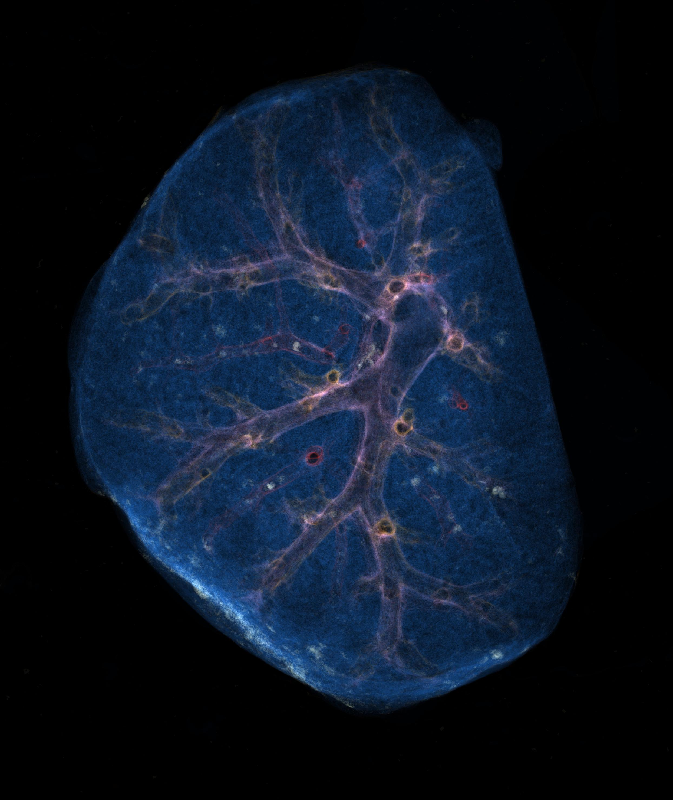
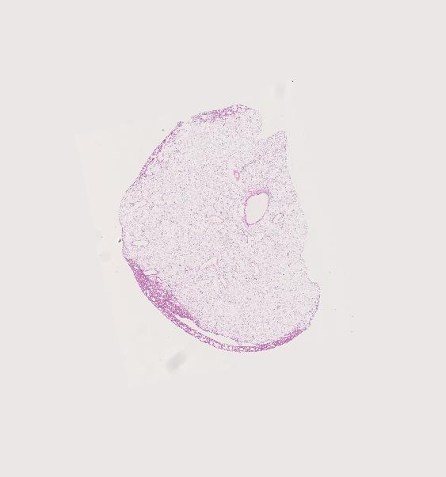

Digital pathology · serial histology
CODA Lung
小鼠肺 150 张连续切片的 3D 重建：配准 · DeepLab 分割 · 体积矩阵 · Blender 可视化。

3D visualization
完整组织 3D：肺泡（半透明蓝）· 支气管 · 血管 · 间质 · 未扩张肺 · 肿瘤；Blender Cycles 转台。


- bronchioles
- vasculature
- stroma
- alveoli (z-proj)
Results


Loading class volumes…
Method
Based on CODA (Kiemen et al., Nature Methods 2022) and the official mouse-lung sample (20× NDPI, ~10 µm spacing). Inspired by Wirtz Lab 3D Pathology.
Pipeline
- Downsample NDPI → 10× / 5× / 1× TIFF
- Tissue masks + elastic registration
- Train / apply DeepLab semantic segmentation
- Warp labels →
volume.mat(4 µm/px) - Marching cubes + Blender Cycles turntable